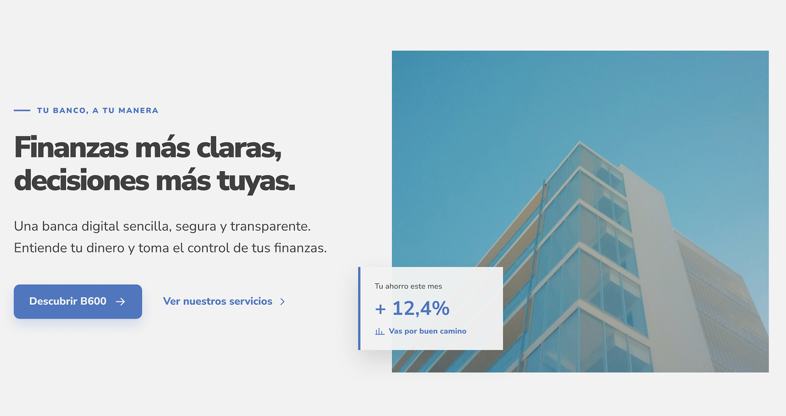
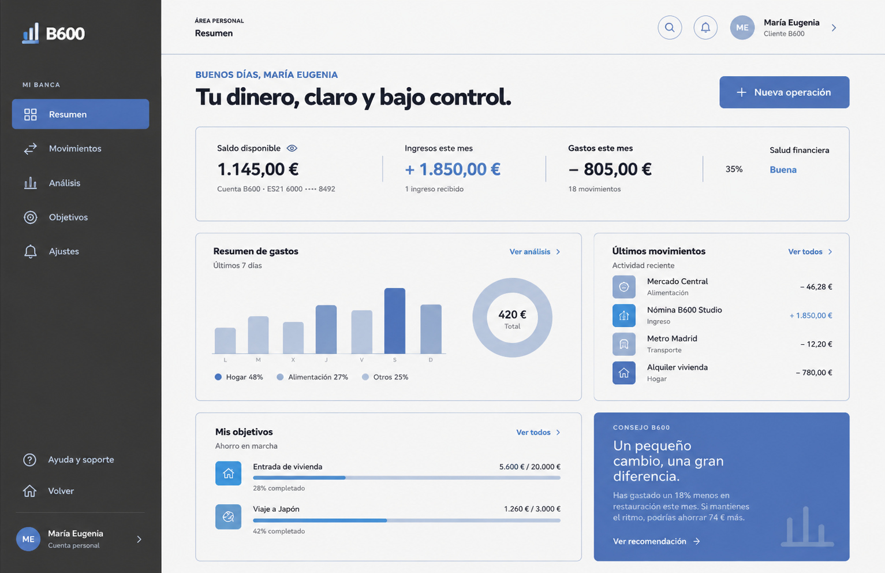

Observar
Analizar las necesidades de los usuarios y comprender qué información necesitan encontrar.
Una experiencia bancaria más clara para acompañar las decisiones del día a día.
ÁREAS APLICADAS
Investigación · Interacción · Datos
TIPO DE PROYECTO
Sitio web
HERRAMIENTAS
Figma Make · Figma Design

OBJETIVO
El objetivo de B600 es organizar la información bancaria para facilitar la consulta de datos y las operaciones cotidianas de los usuarios.
Analizar las necesidades de los usuarios y comprender qué información necesitan encontrar.
Estructurar los contenidos para facilitar la navegación y la comprensión de la información.
Desarrollar una propuesta visual clara, sencilla y coherente con las necesidades detectadas.
RESULTADO
El resultado es una propuesta de banca digital con una organización clara de los contenidos, que facilita la consulta de información y la navegación.
